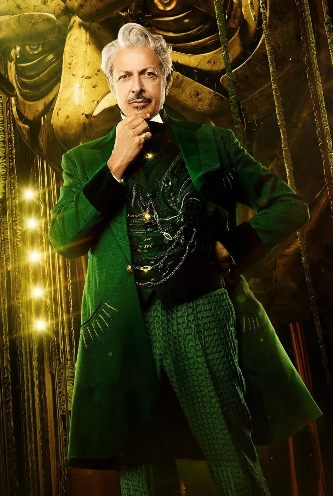

Before he was known as the Wonderful Wizard of Oz, the Wizard was simply Oscar “Oz” Diggs, a native of Omaha, Nebraska, and a traveling carney. Through some unknown circumstances, he arrived in the magical land of Oz via a hot air balloon. Lacking legitimate magical ability, he used his technological savvy to convince the locals he was a powerful wizard and eventually became known as the Wizard of Oz. At some point, the Wizard, posing as a traveling salesman, met Melena Thropp and started an illegitimate romantic relationship with her, indulging in their vice with the Wizard's green elixir.